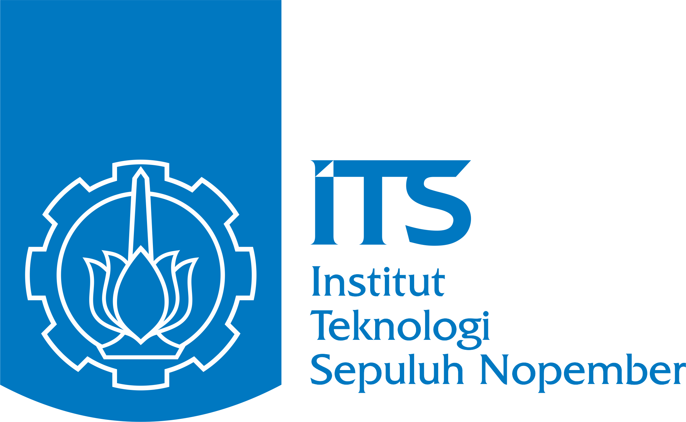
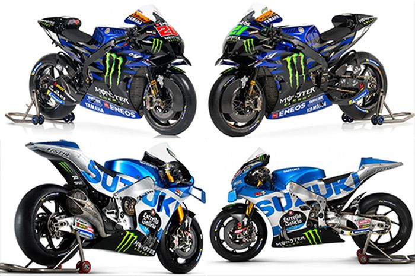
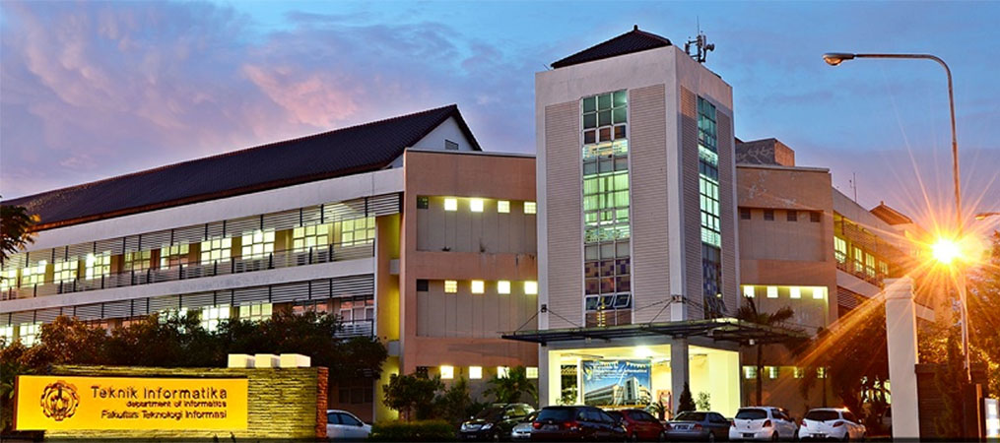
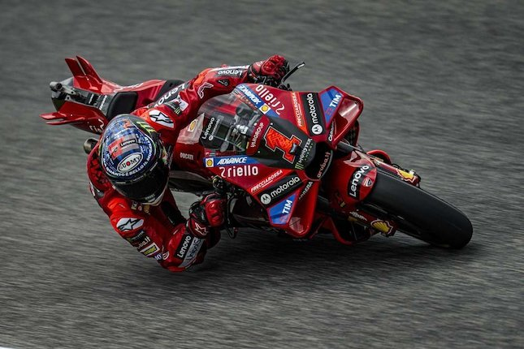

Portal Berita Harian
Home
Kontak
Berita Terbaru
Lowongan Pekerjaan
Informasi Iklan
Event
Kegiatan
Surabaya

Javier mendapatkan IPK tertinggi di ITS
Berita Terkini
Pernikahan anak tunggal dan anak pertama pada 2027
Event

Profesi pembalap MotoGP
Lowongan Pekerjaan

Teknik Informatika ITS menjadi jurusan dengan rekor nilai SBMPTN tertinggi
SBMPTN dan SNMPTN

Motogp Mandalika 2023 berlangsung sangat meriah
Pariwisata
Berita Harian
Motogp Mandalika 2023 berlangsung sangat meriah
Francesco Bagnaia menjadi juara setelah berjuang keras menghadapi Maverick Vinales di Sirkuit Mandalika Indonesia 2023.
Teknik Informatika ITS menjadi jurusan dengan rekor nilai SBMPTN tertinggi
Teknik Informatika ITS menjadi jurusan dengan nilai SBMPTN tertinggi di Indonesia dengan mahasiswa barunya yang memiliki skor sempurna yaitu 1000.
Pernikahan anak tunggal dan anak pertama pada 2027
Pernikahan anak tunggal konglomerat dan anak pertama konglomerat terjadi di Surabaya Timur.
Javier mendapatkan IPK tertinggi di ITS
Javier Nararya Aqsa Setiyono yang masuk ITS melalui jalur mandiri berhasil menjadi wisudawan dengan nilai tertinggi di ITS.